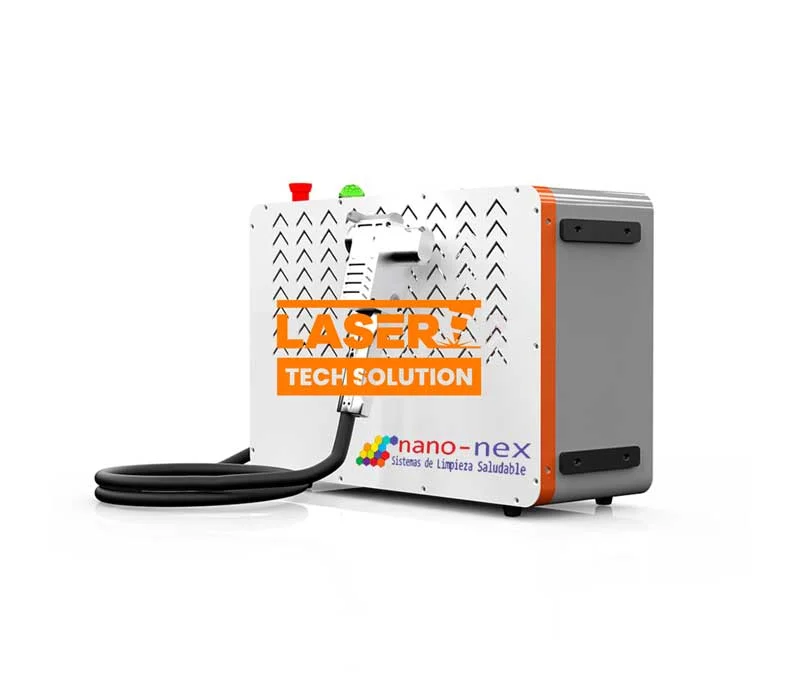

Limpieza con Láser- Equipos de 2.000W
La tecnología láser ha transformado la manera en que abordamos varios procesos industriales y de construcción. Una de esas creaciones es el removedor de óxido láser manual de 2000 W. Este ingenioso y potente instrumento ofrece una forma portátil y eficiente de eliminar el óxido de una variedad de áreas. En este blog, exploraremos los usos y beneficios del removedor de óxido láser de 2000 W y el uso más extenso de los láseres manuales de 2000W.

El removedor de óxido láser manual de 2000 W es una herramienta sorprendente para eliminar el óxido de áreas metálicas. El dispositivo funciona utilizando un haz láser de alta potencia que se dirige hacia el sector oxidado. El láser calienta el óxido, lo que hace que se descomponga y oxide, facilitando su eliminación. Esto puede ser especialmente efectivo para áreas difíciles o construcciones metálicas intrincadas, como maquinaria o esculturas artísticas.
El removedor de óxido láser de 2000 W no solo ofrece excelentes resultados, sino que también es increíblemente eficiente. A diferencia de los procedimientos clásicos de supresión de óxido, como los tratamientos de arena o químicos, el removedor de óxido láser no requiere materiales ni limpieza adicionales. Esto lo convierte en una sorprendente alternativa para instalaciones industriales y de construcción que necesitan suprimir el óxido de manera inmediata y eficiente.
Además de la supresión de óxido, el láser manual de 2000W tiene otras aplicaciones. Por ejemplo, también se puede utilizar para limpiar y preparar áreas para pintar o soldar. El láser puede eliminar grasa, aceite y otros contaminantes, dejando una superficie limpia y suave. Además, el láser manual de 2000 W se puede usar para cortar una variedad de materiales, como plástico, madera y metal.
Cuando se trata de elegir el adecuado láser de 2000 W, hay ciertos aspectos a tener en cuenta. En primer lugar, es importante evaluar los requisitos específicos de la aplicación. Esto puede incluir el tipo de material en el que se está trabajando, la magnitud del área y el grado de precisión requerido. También es importante tener en cuenta la durabilidad y el peso del dispositivo láser, ya que estos factores pueden afectar la portabilidad y la facilidad de uso.
En resumen, el removedor de óxido láser manual de 2000 W y otros láseres manuales de 2000W ofrecen soluciones eficientes y versátiles para una variedad de procesos industriales y de construcción. Su tecnología innovadora y diseño portátil los convierten en una opción sorprendente para las organizaciones que buscan optimizar sus operaciones y mantener altos niveles de productividad. Con una variedad de usos y beneficios, los láseres manuales de 2000W siguen transformando la forma en que abordamos los procesos industriales tradicionales.